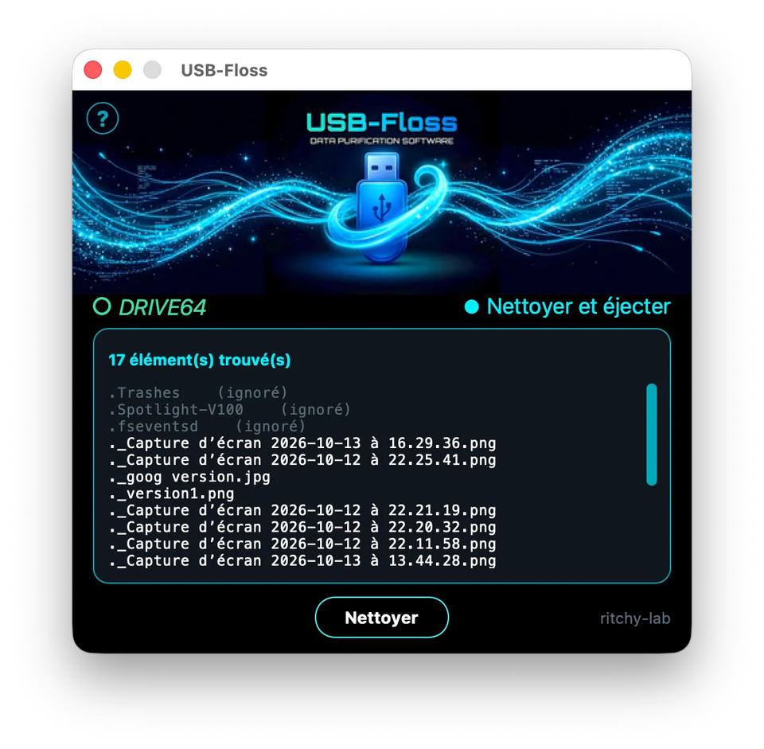

USB-Floss
La clé USB propre.
macOS sème des fichiers invisibles sur tes clés USB : .DS_Store,
._*, et d'autres fichiers inutiles. USB-Floss les retire,
proprement, sans toucher à tes vrais fichiers.
macOS
Gratuit
Open source

Nettoie vraiment
Les fichiers de macOS qui polluent la clé : .DS_Store,
._* et les fichiers cachés inutiles.
Simple
Une clé, un bouton, et c'est propre. Pas de réglage compliqué.
Gratuit et open source
Le code est sur GitHub, sous licence MIT.
Le fichier à télécharger se trouve sur la page Releases.
Sur macOS (Apple Silicon), avec Homebrew :
brew install --cask ritchy-lab/tap/usb-floss